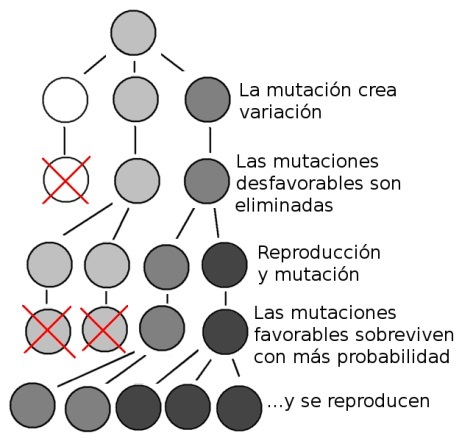

¿Por qué te escondes tan bien? - Unidad 4
En la naturaleza hay muchos animales muy bien camuflados con su entorno. Algunos animales se confunden con ramas, hojas verdes, hojas secas, ramitas o incluso con flores. Estas adaptaciones les permiten a muchos animales evadir depredadores o acechar a sus víctimas con sigilo, o ambas cosas.
Dentro del grupo de las mantis es posible encontrar espectaculares casos de camuflaje. Tal es el caso de Choeradodis columbica una especie de mantis que vive en Colombia que se confunde muy bien con una hoja verde. Vista desde arriba nos despierta mayor preocupación por los insectos que le sirven de alimento y puede pasar desapercibida por los pájaros que cazan insectos.

Al otro lado del mundo, en el sudeste asiático vive la mantis orquídea (Hymenopus coronatus) una especie de mantis que, como su nombre lo indica, se parece mucho a una orquídea. Esta especie posee unas proyecciones en las patas y un abdomen aplanado que imitan muy bien a los pétalos de las orquídeas. Cuando las mantis están en reposo, lo cual es muy frecuente en ellas, los insectos no se percatan del engaño. La imitación es tan buena que incluso la cabeza vista con luz ultravioleta (muchos de sus presas pueden verla) simula los nectarios de las orquídeas. Así pues los insectos que vistan las orquídeas a alimentarse de su néctar se dirigen a las fauces de su depredador. Las mantis Hymenopus son unas flores poco amigables para muchos insectos de las pluviselvas de Asia. Más asombroso aún es que las mantis orquídea cuando son muy pequeñas e inmaduras o ninfas se mimetizan con hormigas.

¿Cómo llegó la mantis hoja a imitar tan bien una hoja o la mantis orquídea imitar tan bien una flor? La respuesta a este interrogante la dieron Alfred R. Wallace y Charles Darwin.
Sabemos que los organismos de una población no son iguales entre sí. Esta diversidad tiene bases genéticas: la mutación que crea nuevos alelos y la reproducción sexual que mezcla los genes de manera aleatoria. La diversidad es muy útil en el mundo natural donde hay una continua lucha de los organismos por sobrevivir. Sabemos también que en los ecosistemas los recursos son limitados, y que los depredadores, enfermedades y cambios en el clima, son factores que están siempre “acechando” a los seres vivos (ver unidad 2).
Por esto cada vez que aparece una variedad genética que ajusta mejor al organismo a su entorno, la naturaleza favorece a su poseedor. Este organismo llegará a la adultez y dejará descendencia, y sus hijos probablemente heredaran ese gen o genes responsables
Volvamos a las mantis y al origen de sus adaptaciones. Las mantis son organismos muy complejos. No obstante, cada órgano, célula y proteína de su cuerpo se formaron gracias a la expresión de muchos genes. De hecho hay unos genes que afectan la expresión de otros genes, especialmente cuando el organismo se está formando en el huevo y cuando es una ninfa.
Parea ilustrar el proceso de adaptación tomemos la pata delantera de la mantis. Esta consta de varias partes que se articulan y que el animal usa para atrapar sus presas.

En una población de mantis los individuos tendrán ligeras diferencias en cuanto a sus patas. Podrán diferir en la longitud de la pata, o de cada uno de sus segmentos, en el color, en el número de espinas, etc. Estas diferencias cuando son heredables están relacionadas con los genes de las mantis.

Son estas diferencias las que afectan la supervivencia. En el caso de un individuo que cace entre el follaje, le es más ventajoso ser de color verde. Para quienes cazan entre las flores es ventajoso tener un color parecido a los pétalos de las flores. En los antepasados de las mantis orquídea cada cambio que hacía que el organismo se pareciera más a una flor, ya sea en el color, o en el ancho del fémur de sus patas, tenía más probabilidades de capturar presas, así también tenía más probabilidades de dejar más descendencia, y sus genes ventajosos pasarían a la siguiente generación.
Por su parte, en las poblaciones de mantis que cazaban entre el suelo del bosque, cada cambio que hacía que una mantis se camuflara mejor con las hojas secas tenía mejores posibilidades de sobrevivir.
Cada vez que aparece una característica que genere un cambio, por pequeño que esta sea, si confiere una ventaja en la lucha por la existencia ésta pasará a la siguiente generación. Así de cambio en cambio, los organismos resultan adaptados al medio en el que viven. Este proceso fue denominado por Charles Darwin como selección natural.
El mecanismo de la selección natural fue descubierto también por Alfred Russell Wallace, contemporáneo y paisano de Charles Darwin. Este mecanismo para poderse realizar debe cumplir tres condiciones:
Variación. Dentro de la población debe existir variabilidad en los caracteres individuales. Sin variación no es posible la selección natural ni la evolución biológica. La variación es dada por la mutación y la reproducción sexual.
Herencia. Las características en las que los individuos varían deben estar determinados en mayor o menor grado por genes, de manera que puedan transmitirse de padres a hijos.
Reproducción diferencial. Las distintas variantes individuales deben permitir a sus portadores reproducirse con mayor o menor éxito. Los individuos que muestren una característica favorable se reproducirán mejor que los individuos que muestran otras alternativas.
Como resultado de este mecanismo los organismos se ajustan de manera natural al medio en el que viven. La selección natural no persigue un fin determinado, ni prepara para condiciones ambientales futuras.

Darwin y Wallace notaron que este proceso ciego y no dirigido conscientemente es el responsable de las adaptaciones de los seres vivos a su entorno. Wallace, por ejemplo, apuntó a la selección natural para explicar el camuflaje de los insectos, como la mantis hoja o la mantis orquídea, con las que iniciamos esta unidad, así:
“Aun los colores peculiares de muchos animales, especialmente insectos, tan cercanamente semejantes al suelo o las hojas o los troncos de donde habitualmente residen, se explican por el mismo principio [la selección natural]; aunque en el curso de las épocas pudieron haberse sucedido variedades de muchos tintes, todavía esas razas que tienen colores mejor adaptados a la ocultación de sus enemigos deberían inevitablemente sobrevivir más.”

La selección natural es un mecanismo asombroso que ha permitido las adaptaciones de las diferentes especies a sus respectivos entornos. De hecho, la selección natural es el principal mecanismo evolutivo. Cabe aclarar aquí que evolución es el cambio de la estructura genética de las poblaciones con el paso de muchas generaciones. Como vimos la selección natural trae como consecuencia que nuevos alelos se fijen en la población, mantiene a los favorables, elimina a los alelos desfavorables o a los poco ventajosos. Por esto la selección natural es crucial para el proceso evolutivo. Veremos más sobre la selección natural en la siguiente unidad.
Enlaces de interés:
Selección Natural: https://evovagario.wordpress.com/evolucion/mecanismos/seleccion-natural/
¿Qué es la selección natural y cómo es ella central a la teoría de la evolución?: http://www.sindioses.org/cienciaorigenes/douglasfutuyma.html
Bibliografía
Campbell, N (1990). Biology. Second edition, Benjamin/Cummings.
Curtis, H., Barnes, S. (1989). Biology, Fifth edition, Worth Publishers.
Darwin, C. (1859). El origen de las Especies, Madrid, Ediciones EDAF.
Center for Insect Science Education Outreach The University of Arizona, (1997). Información de la mantis religiosa. Tomado de: http://insected.arizona.edu/espanol/mantidinfo.htm
Entomoblog., (2010), Las siete mantis más asombrosas. Tomado de: http://naukas.com/2010/10/08/mantis-sorprendentes/
Hickman, C., Roberts, L, y Parson A. (1998). Principios integrales de zoología. Décima edición. Buenos Aires. McGraw-Hill-Interamericana.
Sadava, D. et al (2009). Vida. La ciencia de Biología. Buenos Aires, Argentina, Editorial Médica Panamericana.
Wallace, A.R.(1858). Sobre la tendencia de las variedades para alejarse indefinidamente del tipo original. Recuperado de: http://www.revista.inecc.gob.mx/article/view/131
Créditos de fotografías
Foto 1: http://www.faunaexotica.net/foro/index.php?topic=43875.0
Foto 2: Seiya Kudo - http://ze-ph.sakura.ne.jp/zeph-blog/index.php?m=201001&page=8
Foto 3: Juanjo Trujillo - http://floramalaga.blogspot.com/2010/11/fauna-de-mi-jardin.html
Foto 4: Pana - Francisco Dillet - http://dillet.blogspot.com/2012/06/nacimiento-de-una-mantis-religiosa.html
Comentarios
Comments powered by Disqus